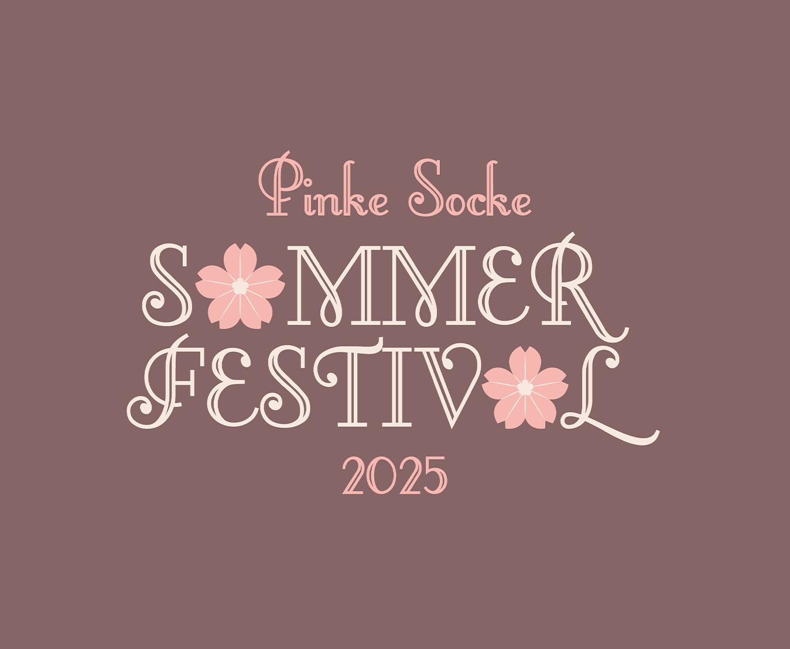
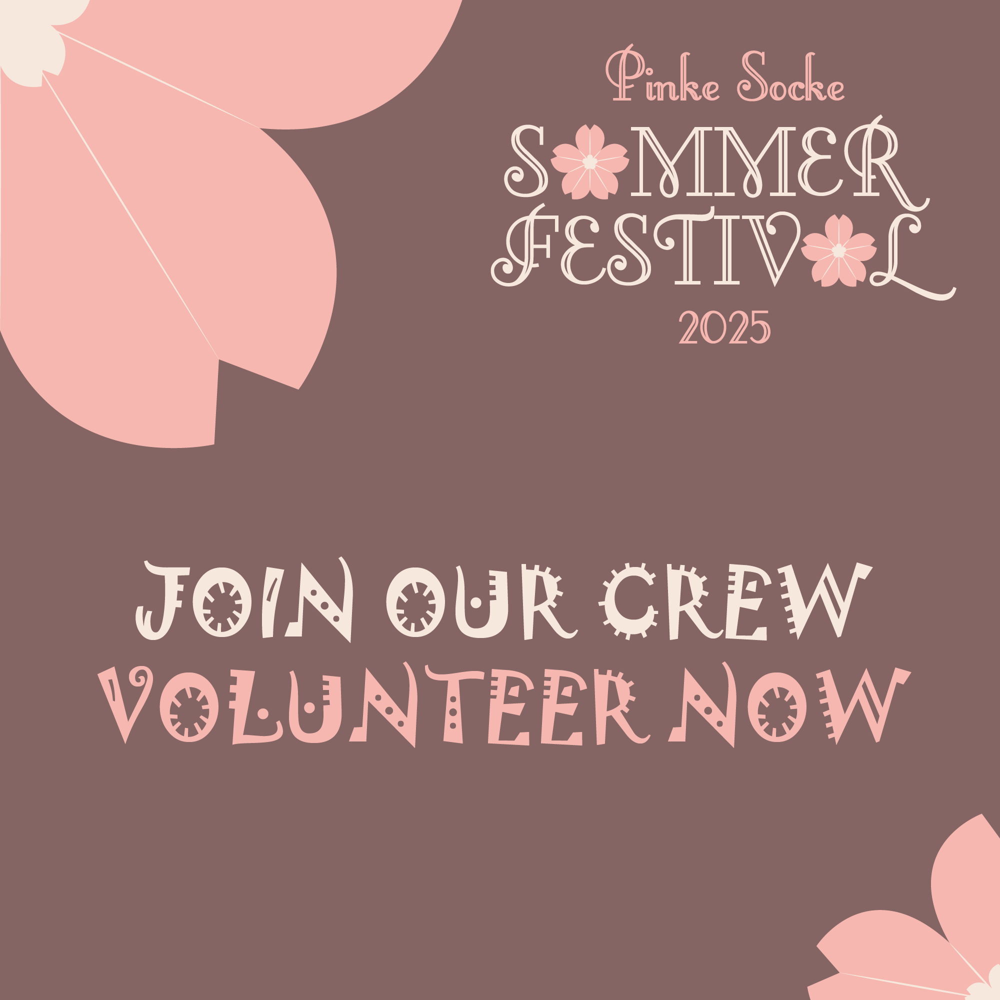

02. & 03.08.2025
"WE'RE STILL STANDING"

Für unsere Festivalgäste haben wir dieses Jahr wieder die Überflieger der aufsteigenden Sterne gesichert. Wir freuen uns, diese wundervollen Artists auf dem #PSSF25 begrüßen zu dürfen.
Der Headliner wird bald bekannt gegeben...
Die Produzenten- und DJ-Gruppierung Testbild lädt euch ein zu einem unvergesslichen Partyabend voller pulsierender Beats und mitreißender Melodien. Mit ihrem einzigartigen Mix aus Techno, House und experimentellen Sounds schaffen sie eine Klanglandschaft, die zum Tanzen und Träumen gleichermaßen einlädt. Freut euch auf energiegeladene Sets, exklusive Tracks und sogar die Möglichkeit, eure Lieblingssongs live einzubringen. Testbild verschiebt die Grenzen der Tanzmusik – seid dabei, wenn sie die Frequenzen der Nacht neu definieren!
Die gefeierte Autorin Dineloth Teithoril entführt euch in die Welt ihres neuesten literarischen Werks. In einer exklusiven Lesung auf dem #PSSF25 präsentiert sie ihre unverwechselbaren Texte voller Tiefe, Emotion und Poesie. Ein einmaliges Erlebnis für alle Literaturbegeisterten – lasst euch von ihren Worten verzaubern!
| Zeit | Event | Ort |
|---|---|---|
| 12:00 Uhr | Akkreditierungen (VIP, Artist, Volunteer) | Einlass |
| 13:00 Uhr | Eröffnung Festival | Einlass |
| Weitere Informationen folgen... |
| Zeit | Event | Ort |
|---|---|---|
| Weitere Informationen folgen... | ||
| 16:00 Uhr | Abschluss | Einlass |
Unsere Tickets für das Festival sind jetzt verfügbar. Klicke auf den untenstehenden Button, um direkt zu unserer Ticketseite zu gelangen. Dort findest du alle Informationen zu Ticketoptionen, Preisen und exklusiven Angeboten. Warte nicht zu lange – die Plätze sind begrenzt!

Willkommen in unserer Festival-Familie! Wir suchen leidenschaftliche, energiegeladene und enthusiastische Freiwillige, die Teil unseres unglaublichen Crew-Teams werden möchten. Ob du ein Musikliebhaber, ein Festival-Enthusiast oder einfach jemand bist, der gerne neue Erfahrungen sammelt und neue Leute trifft – wir haben den perfekten Platz für dich! Als freiwilliges Crew-Mitglied spielst du eine entscheidende Rolle beim Erfolg unseres Festivals. Du wirst nicht nur hinter die Kulissen eines der aufregendsten Events des Jahres blicken, sondern auch wertvolle Fähigkeiten erlernen, unvergessliche Erinnerungen schaffen und Freundschaften fürs Leben knüpfen.
Unsere freiwilligen Crew-Mitglieder unterstützen uns in verschiedenen Bereichen, darunter:
Wir suchen Freiwillige, die motiviert, verantwortungsbewusst und teamfähig sind. Du solltest bereit sein, in einem dynamischen Umfeld zu arbeiten und dabei immer ein Lächeln für unsere Gäste übrig haben.
Bist du bereit, ein unvergessliches Abenteuer zu erleben und Teil unserer Festival-Crew zu werden? Dann fülle einfach das Formular aus oder schick uns einfach eine E-Mail an pssf@breitband.group und erzähle uns ein wenig über dich und warum du mitmachen möchtest. Wir freuen uns darauf, dich kennenzulernen!
Danke, dass du erwägst, deine Zeit und Energie unserem Festival zu widmen.
Hier ist unser offizieller Lageplan, der dir hilft, dich auf unserem Festivalgelände zurechtzufinden. Unsere bunten Markierungen auf dem Plan zeigen, wo die verschiedenen Bereiche sind:
Erste Hilfe, Security und Essensstände sowie Wasserstellen sind in der Indoor Area zu finden. Reguläre Parkplätze werden vor Ort ausgewiesen.
Packen deine Sonnenbrille und Festivaloutfit ein und bereite dich auf ein unvergessliches Erlebnis vor. Wir können es kaum erwarten, dich beim Pinke Socke Sommerfestival zu begrüßen!
Du möchtest in Erinnerungen schwelgen? Du möchtest das #PSSF23 oder das #PSSF24 nocheinmal in Gedanken erleben? Du willst wissen, wie es auf dem #PSSF so aussieht? Dann durchforste doch mal unser Medienarchiv!
{kind=link}
{kind=link}
{kind=link}
{kind=link}
{kind=link}
{kind=link}
{kind=link}
{kind=link}